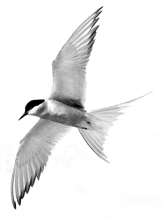
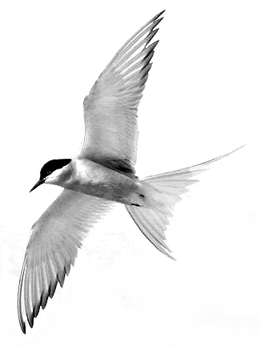

Marine Services
 

Grant B. Harris, Mechanical Engineer & Mariner
with 50 years experienced as bluewater sailor and skipper
Maintenance, Repairs, and Improvements
Standing and running rigging, tuning
and repairs
Electrical and electronics systems and
instrumentation
Engines and power trains
Fiberglass, wood and metal
Crewing & Deliveries
Available for deliveries, crewing,
navigation
Experienced on research vessels as
scientific support technician
Teacher and trainer in sailing and
boat handling
See Sailing/Marine Resume
Contact: gbh@explorative.engineering
508-524-1709
www.Explorative.Engineering/Marine
Vineyard and Nantucket Sounds


Navigation, Charting, Tides and Weather
WHOI's Research Vessel Knorr

Cruise June 2001 in Greenland Sea

MIT Bluewater
Sailing

45ft. IOR Sloop, GEM


Explorative.Engineering,
Woods Hole